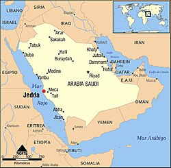

جدة – عروس البحر الأحمر
نبذة تاريخية موجزة
ارتبط اسم جدة بالبحر والتجارة والضيافة منذ قرون؛ فهي بوابة الحجاز ومرفأ الحجاج والزوار. ومع تحوّلاتها العمرانية الحديثة، ظلت المدينة محافظةً على روحها البحرية وأسواقها التراثية ونبضها الثقافي.
شهدت جدة موجات تطوير شاملة لأنسنة الأحياء والواجهة البحرية وشبكات الطرق والممرات، فغدت تجربة الزيارة أكثر سلاسة وجودة، مع تكامل بين التاريخ والهوية من جهة، والبنية التحتية والخدمات الذكية من جهة أخرى.
اليوم تقدّم جدة تجربة متوازنة: سياحة بحرية وثقافية وفنية على مدار العام، ومشهدًا طهويًا متنوعًا، وفعاليات موسمية على الكورنيش ومحاور المدينة الحديثة.
أبرز ما يميّز جدة
- الواجهة البحرية والكورنيش الشمالي
- جدة التاريخية (البلد) وبيوتها التراثية
- الفعاليات الموسمية والفنون العامة
- المطاعم والمقاهي ذات المذاقات العالمية
- غوص البحر الأحمر والأنشطة البحرية